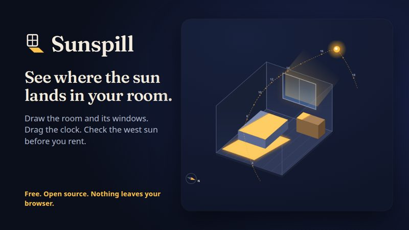
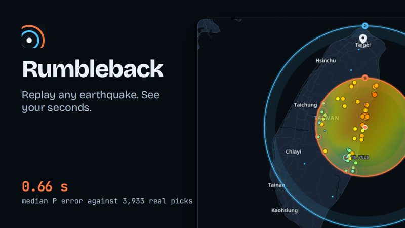
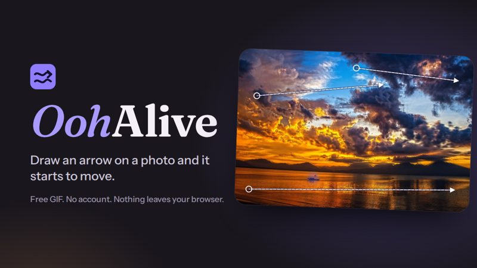
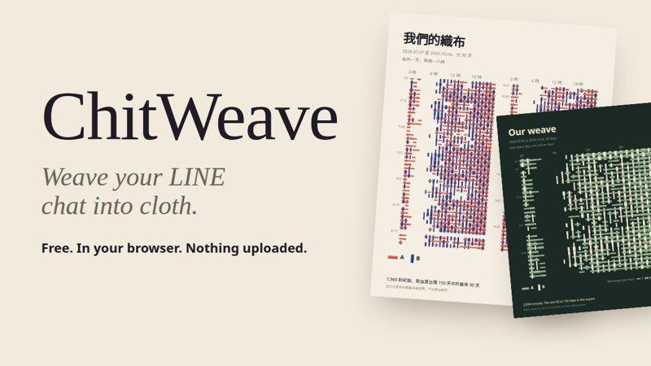
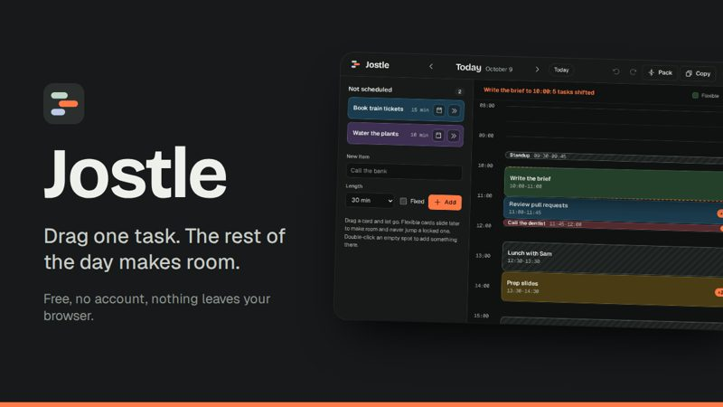
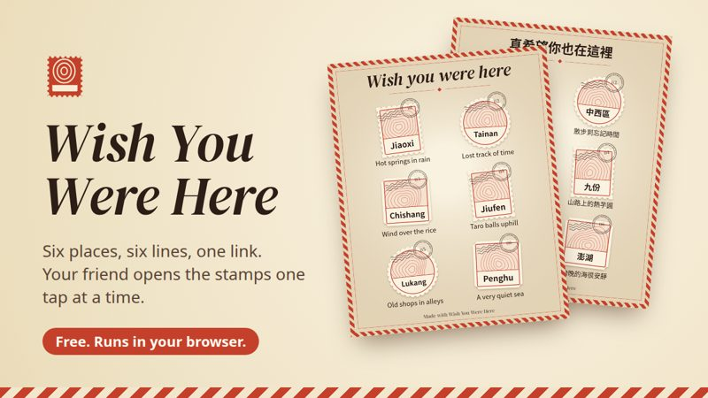
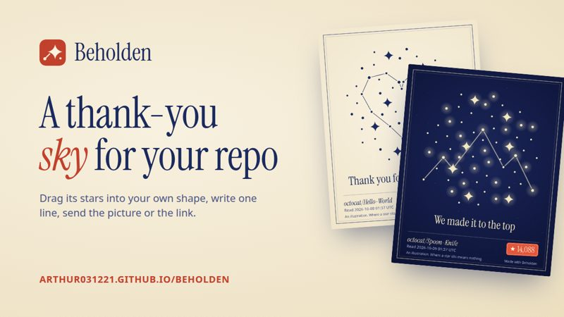
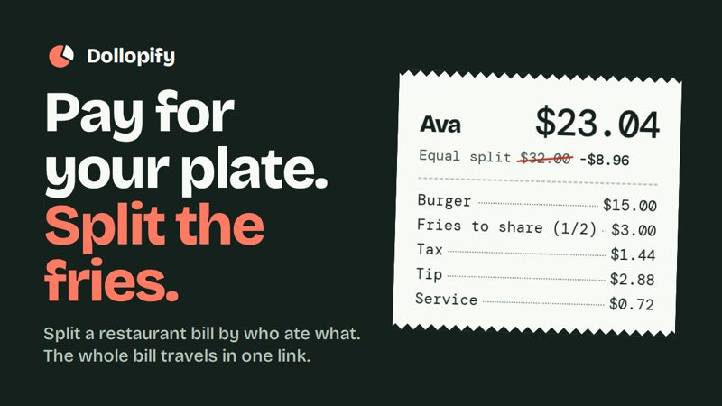

陽光落點Sunspill
畫出房間和窗戶，拖動時鐘，看陽光每個小時落在地板哪裡。看房前先查西曬。
See where sunlight lands in your room, hour by hour and season by season.
打開就能用，不用註冊，也不用付錢。

畫出房間和窗戶，拖動時鐘，看陽光每個小時落在地板哪裡。看房前先查西曬。

重播真實發生過的地震，看 P 波和 S 波掃過地圖，算出震波幾秒後到你家。

在照片上畫幾個箭頭，水和雲就流動起來，免費存成 GIF。照片不會上傳。

把兩個人的 LINE 聊天紀錄織成一張布，看出你們什麼時候最常聊天。檔案不會上傳。

拖動一個任務，其他行程自動繞過固定的安排讓出位置，放手前就看得到結果。

寫下六個地方和各一句回憶，做成一張郵票紙，朋友打開連結後一張一張揭曉。

把一個 GitHub 專案的星星拖成你想要的形狀，寫一句謝謝，存成圖片或分享連結。

一桌人照各自吃的菜拆帳，共享的菜平分，稅和服務費按比例分攤，傳個連結就好。
我是 Arthur，在台灣寫程式。我喜歡做一般人打開就能用的小工具，每一個都免費、開放原始碼。
I'm Arthur, a developer in Taiwan. I build small tools anyone can open and use, all free and open source.
也替知名的開源專案修過問題，例如：